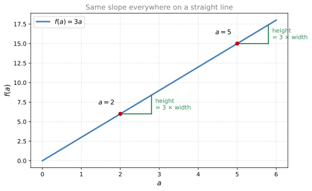
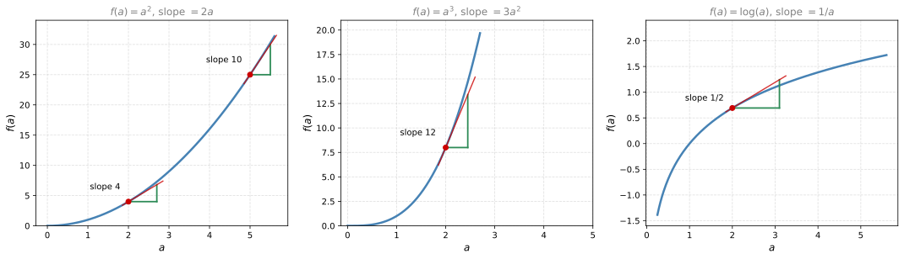
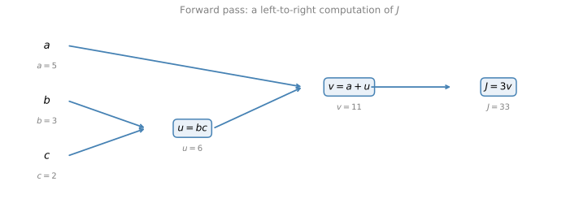
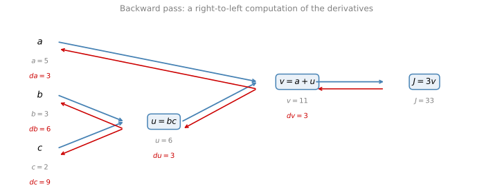
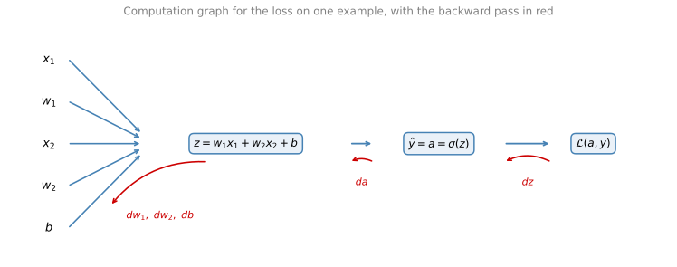

Derivatives and Computation Graphs
deep-learning
calculus
backpropagation
gradient-descent
Intuition for derivatives as slopes, computation graphs, backpropagation with the chain rule, and gradient descent for logistic regression on m examples.
The previous section ended with the gradient descent update rule, which is built out of derivatives. This section opens up the box and peers a little further into the details of calculus. Maybe you have not seen calculus since your college days, and depending on when you graduated, maybe that was quite some time back. If that is what you are thinking, do not worry. You do not need a deep understanding of calculus to apply neural networks and deep learning very effectively. All you need is an intuitive understanding, and later in the course you will meet a couple of types of functions, called forward functions and backward functions, that encapsulate everything that needs to be done with respect to calculus, so that beyond that point you do not need to worry about it anymore.
If you are among the smaller group of people who are expert in calculus and very familiar with derivatives, it is probably okay for you to skim the first two sections. For everyone else, let us dive in and try to gain an intuitive understanding of derivatives. The derivatives intuition page in the calculus notes covers the same idea from scratch with more examples if you want extra practice.
Derivatives Intuition
Here is the function \(f(a) = 3a\) plotted. It is just a straight line. To get intuition about derivatives, let us look at a few points on this function.
Say that \(a = 2\). Then \(f(a) = 3a = 6\). Now give the value of \(a\) a little nudge to the right, bumping it up to \(a = 2.001\). The 0.001 difference is too small to show on the plot, it is just a tiny nudge. Now \(f(a) = 3 \times 2.001 = 6.003\). Look at the little triangle this nudge draws. If we nudge \(a\) by 0.001 to the right, \(f(a)\) goes up by 0.003. The amount that \(f(a)\) went up is three times as big as the amount that we nudged \(a\) to the right. So we say that the slope, that is the derivative, of the function \(f(a)\) at \(a = 2\) is 3.
The term derivative basically means slope. Derivative just sounds like a scary, more intimidating word, whereas slope is a friendlier way to describe the same concept. Whenever you hear derivative, think slope of the function. More formally, the slope is the height divided by the width of the little triangle, here \(0.003 / 0.001 = 3\).
Now look at the function at a different point. Say \(a = 5\), so \(f(a) = 15\). Nudge \(a\) to the right again, to 5.001, and \(f(a)\) becomes 15.003. Once again, \(f(a)\) goes up three times as much as \(a\) does. The slope at \(a = 5\) is also 3.
The way we write this is
\[ \frac{d f(a)}{da} = 3 \qquad \text{or equivalently} \qquad \frac{d}{da} f(a) = 3 \]
Whether you put \(f(a)\) on top or write it to the side does not matter. The equation just means that if you nudge \(a\) to the right a little bit, you expect \(f(a)\) to go up by three times as much as you nudged \(a\).
NoteAside: the Formal Definition Uses an Infinitesimal Nudge
In this section we talk about nudging \(a\) by 0.001. The formal mathematical definition of the derivative uses an even smaller nudge. Not 0.001, not 0.000001, but an infinitesimal amount, an infinitely tiny nudge. The definition says that when you nudge \(a\) to the right by that infinitely tiny amount, \(f(a)\) goes up by three times whatever tiny amount you used. For intuition, we keep working with 0.001, even though 0.001 is small but not infinitesimally small.
One property of this function is that no matter where you take the slope, it is equal to 3. Whether \(a = 2\) or \(a = 5\), if you increase \(a\) by 0.001, \(f(a)\) goes up by three times as much. This function has the same slope everywhere. One way to see that is that wherever you draw the little triangle, the height divided by the width always has a ratio of three to one.
Review Questions
1. In intuitive terms, what does the derivative of a function mean?
TipAnswer
The slope of the function at a point. If you nudge the input by a tiny amount, the derivative tells you how many times bigger the change in the output is. It equals the height divided by the width of the little triangle drawn by the nudge.
1. For \(f(a) = 3a\), you nudge \(a\) from 2 to 2.001. What happens to \(f(a)\), and what is the derivative at \(a = 2\)?
TipAnswer
\(f(a)\) goes from 6 to 6.003, an increase three times as big as the nudge. So \(\frac{d f(a)}{da} = 3\) at \(a = 2\).
1. How does the formal definition of the derivative differ from the 0.001 nudge picture?
TipAnswer
The formal definition uses an infinitesimally small nudge, infinitely tiny rather than 0.001. The 0.001 picture gives the right intuition, but 0.001 is small without being infinitesimal.
1. Why does \(f(a) = 3a\) have the same derivative at every point?
TipAnswer
It is a straight line. Wherever you draw the little triangle along the line, the ratio of height to width is always three to one, so the slope is 3 everywhere.
More Derivative Examples
Now a slightly more complex example, where the slope of the function can be different at different points. Here is the function \(f(a) = a^2\), along with two more functions we will meet in a moment.

Take the point \(a = 2\) on \(f(a) = a^2\), so \(f(a) = 4\). Nudge \(a\) slightly to the right, to \(a = 2.001\). Then \(f(a) = a^2\) is approximately 4.004. If you pull out a calculator, the exact value is 4.004001, but 4.004 is close enough. Nudging \(a\) to the right by 0.001 makes \(f(a)\) go up four times as much, by 0.004. So the derivative of \(f(a)\) at \(a = 2\) is 4, and in calculus notation, \(\frac{d}{da} f(a) = 4\) when \(a = 2\).
One thing about the function \(f(a) = a^2\) is that the slope is different for different values of \(a\), unlike the straight line from before. Look at \(a = 5\). Then \(a^2 = 25\). Nudge \(a\) up to 5.001, and \(f(a)\) becomes approximately 25.010. Nudging \(a\) up by 0.001 makes \(f(a)\) go up ten times as much, so \(\frac{d}{da} f(a) = 10\) when \(a = 5\). One way to see why the derivative differs at different points is to draw the little triangle at different locations on the curve. The ratio of the height to the width of the triangle is very different at different points.
If you pull up a calculus textbook, the table of formulas will tell you that the slope of the function \(a^2\) is
\[ \frac{d}{da} a^2 = 2a \]
This is consistent with what we worked out. When \(a = 2\), the slope is \(2 \times 2 = 4\). When \(a = 5\), the slope is \(2 \times 5 = 10\). Whenever you see this formula, all it means is that for any value of \(a\), if you nudge it up by a tiny amount, you expect \(f(a)\) to go up by \(2a\) times that amount.
NoteAside: Why 2.001 Squared Is Not Exactly 4.004
We wrote \(f(a) \approx 4.004\) with an extra 0.000001 hanging out there. That extra bit appears because we nudged \(a\) by 0.001, which is small but not infinitesimally small. If we instead nudged \(a\) by an infinitesimally small value, the extra term would go away, and the amount that \(f(a)\) goes up would be exactly the derivative times the amount you nudge \(a\). That is why the derivative only approximately predicts the change for a 0.001 nudge.
To wrap up, here are a few more quick examples, with the derivative formulas you would find in a calculus textbook.
| Function | \(\dfrac{d}{da} f(a)\) | At \(a = 2\) |
|---|---|---|
| \(f(a) = a^2\) | \(2a\) | \(f(a)\) goes from 4 to about 4.004, up 4 times the nudge |
| \(f(a) = a^3\) | \(3a^2\) | \(f(a)\) goes from 8 to about 8.012, up 12 times the nudge |
| \(f(a) = \log(a)\) | \(\dfrac{1}{a}\) | \(f(a)\) goes from about 0.69315 to about 0.69365, up half the nudge |
Feel free to check the middle row. Take 2.001 to the power of three and you find it is very close to 8.012, and indeed \(3 \times 2^2 = 12\). For the last row, \(\log(a)\) here means the base \(e\) logarithm (some people write it as \(\ln(a)\)). The derivative formula predicts that pumping \(a\) up by 0.001 makes \(f(a)\) go up by only half as much, \(\frac{1}{2} \times 0.001 = 0.0005\), which is exactly what the calculator shows.
There are two take-home messages from all this.
- The derivative of a function just means the slope of the function, and the slope can be different at different points on the function. For \(f(a) = 3a\), a straight line, the derivative was 3 everywhere. For functions like \(a^2\) or \(\log(a)\), the slope varies.
- If you want to look up the derivative of a function, you can flip open a calculus textbook or look it up on Wikipedia and get a formula for the slope at any point.
The derivative rules page in the calculus notes derives several of these formulas if you are curious where they come from.
Review Questions
1. For \(f(a) = a^2\), what is the derivative at \(a = 5\), and what does it predict for a 0.001 nudge?
TipAnswer
The derivative is \(2a = 10\). It predicts that \(f(a)\) goes up ten times the nudge, from 25 to approximately 25.010.
1. Why is \(2.001^2\) equal to 4.004001 rather than exactly 4.004?
TipAnswer
Because 0.001 is small but not infinitesimally small. Derivatives are defined with an infinitesimally small nudge, and for such a nudge the change in \(f(a)\) is exactly the derivative times the nudge. With a finite nudge of 0.001, a tiny extra term (here 0.000001) is left over, so the derivative only approximates the change.
1. What are the derivatives of \(f(a) = a^3\) and \(f(a) = \log(a)\), and what do they give at \(a = 2\)?
TipAnswer
\(\frac{d}{da} a^3 = 3a^2\), which is 12 at \(a = 2\), and \(\frac{d}{da} \log(a) = \frac{1}{a}\), which is \(\frac{1}{2}\) at \(a = 2\). So near \(a = 2\), \(a^3\) rises 12 times as fast as \(a\), while \(\log(a)\) rises half as fast.
1. What are the two take-home messages about derivatives from these examples?
TipAnswer
First, the derivative just means the slope of a function, and the slope can be different at different points. Second, you can look up a formula for the derivative of a function in a calculus textbook or on Wikipedia.
Computation Graph
You have heard that the computations of a neural network are organized in a forward pass (forward propagation), in which we compute the output of the network, followed by a backward pass (backpropagation), which we use to compute gradients or derivatives. The computation graph explains why the computations are organized this way.
To illustrate it, let us use a simpler example than logistic regression or a full-blown neural network. Say we are trying to compute a function \(J\) of three variables \(a\), \(b\), and \(c\),
\[ J(a, b, c) = 3(a + bc) \]
Computing this function actually has three distinct steps.
- Compute \(bc\) and store it in a variable \(u\), so \(u = bc\).
- Compute \(v = a + u\).
- Compute the output \(J = 3v\).
We can take these three steps and draw them as a computation graph. Each rectangle is one computation, its inputs come in from the left, and the result flows to the right.

As a concrete example, take \(a = 5\), \(b = 3\), and \(c = 2\). Then \(u = bc = 6\), \(v = a + u = 5 + 6 = 11\), and \(J = 3v = 33\). You can verify that this is \(3 \times (5 + 3 \times 2) = 3 \times 11 = 33\).
The computation graph comes in handy when there is some distinguished or special output variable, such as \(J\) in this case, that you want to optimize. In the case of logistic regression, \(J\) is of course the cost function that we are trying to minimize. What we are seeing in this little example is that through a left-to-right pass, you can compute the value of \(J\). In the next section you will see that in order to compute derivatives, there will be a right-to-left pass, going in the opposite direction, which is the most natural way to compute the derivatives.
Review Questions
1. What are the three computation steps for \(J(a, b, c) = 3(a + bc)\)?
TipAnswer
First \(u = bc\), then \(v = a + u\), and finally \(J = 3v\).
1. With \(a = 5\), \(b = 3\), and \(c = 2\), what values flow through the computation graph?
TipAnswer
\(u = bc = 6\), \(v = a + u = 11\), and \(J = 3v = 33\).
1. When is a computation graph especially useful, and which direction of traversal computes what?
TipAnswer
When there is a special output variable you want to optimize, like the cost \(J\) in logistic regression. A left-to-right (forward) pass computes the value of \(J\), and a right-to-left (backward) pass is the natural way to compute derivatives.
1. Consider a computation graph with the steps \(u = ab\), \(v = a + c\), \(w = bc\), and output \(J = u - v + w\). What is the output \(J\) as a function of \(a\), \(b\), and \(c\)?
- \((c - 1)(a + c)\)
- \((a - 1)(b + c)\)
- \((a + c)(b - 1)\)
- \(ab + bc + ac\)
TipAnswer
c. Substituting the three steps and factoring, \[ J = u - v + w = ab - (a + c) + bc = ab - a + bc - c = a(b - 1) + c(b - 1) = (a + c)(b - 1) \]
Derivatives with a Computation Graph
Now let us take a cleaned-up version of that computation graph and use it to figure out the derivatives of \(J\).

One Step Backwards
Say you want to compute the derivative of \(J\) with respect to \(v\). In other words, if we took the value of \(v\) and changed it a little bit, how would the value of \(J\) change? Well, \(J = 3v\), and right now \(v = 11\). If we bump \(v\) up a little bit to 11.001, then \(J\), which is currently 33, gets bumped up to 33.003. \(J\) goes up three times as much as \(v\), so
\[ \frac{dJ}{dv} = 3 \]
This is very analogous to the earlier example where \(f(a) = 3a\) and we found \(\frac{df}{da} = 3\). Here \(J\) plays the role of \(f\) and \(v\) plays the role of \(a\). In the terminology of backpropagation, we have just computed the derivative of the final output variable (the variable you usually care most about) with respect to \(v\), so we have done one step backwards in the graph.
Chain Rule
Now, what is \(\frac{dJ}{da}\)? If we bump up \(a\) from 5 to 5.001, then \(v = a + u\) goes from 11 to 11.001, and we have already seen that \(J\) then goes up to 33.003. Increasing \(a\) by 0.001 increases \(J\) by 0.003, so the derivative is 3.
One way to break this down is that changing \(a\) changes \(v\), and through changing \(v\), that changes \(J\). First, how much does \(v\) increase? By an amount determined by \(\frac{dv}{da}\). Then the change in \(v\) causes \(J\) to increase. In calculus this is called the chain rule. If \(a\) affects \(v\), which affects \(J\), then the amount that \(J\) changes when you nudge \(a\) is the product of how much \(v\) changes when you nudge \(a\) times how much \(J\) changes when you nudge \(v\),
\[ \frac{dJ}{da} = \frac{dJ}{dv} \cdot \frac{dv}{da} = 3 \times 1 = 3 \]
using \(\frac{dv}{da} = 1\), since increasing \(a\) by 0.001 increases \(v = a + u\) by exactly the same amount. So having already computed \(\frac{dJ}{dv}\) helps us compute \(\frac{dJ}{da}\). That is another step of the backward calculation. The chain rule is covered in more depth on the derivative rules page.
Code Convention: dvar
Let us introduce one more notational convention. When you write code to implement backpropagation, there is usually one final output variable you really care about, the last node in the computation graph, here \(J\). A lot of the computation is trying to compute the derivative of that final output variable with respect to some intermediate variable, like \(a\), \(b\), \(c\), \(u\), or \(v\).
In Python you could give this a long variable name like dFinalOutputVar_dvar, or dJdvar. But because you are always taking derivatives with respect to the same final output variable, we use the shorter convention that the code variable name dvar represents \(\frac{dJ}{d\text{var}}\). So in code, dv denotes \(\frac{dJ}{dv} = 3\), and da denotes \(\frac{dJ}{da} = 3\).
Rest of the Backward Pass
Let us keep computing derivatives right to left.
The derivative with respect to \(u\). Start with \(u = 6\). Bump it up to 6.001. Then \(v\) goes from 11 to 11.001, and \(J\) goes from 33 to 33.003, so \(\frac{dJ}{du} = 3\). The analysis is very similar to the one for \(a\),
\[ \frac{dJ}{du} = \frac{dJ}{dv} \cdot \frac{dv}{du} = 3 \times 1 = 3 \]
so du = 3.
The derivative with respect to \(b\). Imagine you are allowed to tweak \(b\) a little bit to minimize or maximize \(J\). By the chain rule,
\[ \frac{dJ}{db} = \frac{dJ}{du} \cdot \frac{du}{db} \]
If \(b\) goes from 3 to 3.001, the first thing it affects is \(u = bc\). Since \(c = 2\), \(u\) goes from 6 to 6.002, so \(\frac{du}{db} = 2\). When you bump up \(b\) by 0.001, \(u\) increases twice as much. And we already know \(\frac{dJ}{du} = 3\), which tells us that when \(u\) goes up by 0.002, \(J\) goes up three times as much, by 0.006. Multiplying the two,
\[ \frac{dJ}{db} = 3 \times 2 = 6 \]
If you check the math in detail, \(b = 3.001\) gives \(u = 6.002\), then \(v = a + u = 11.002\), and \(J = 3v = 33.006\). So db = 6.
The derivative with respect to \(c\). By the same reasoning,
\[ \frac{dJ}{dc} = \frac{dJ}{du} \cdot \frac{du}{dc} = 3 \times 3 = 9 \]
so dc = 9.
The key takeaway is that when computing all of these derivatives, the most efficient way is a right-to-left computation, following the direction of the red arrows. We first compute the derivative with respect to \(v\). That becomes useful for computing the derivatives with respect to \(a\) and \(u\). The derivative with respect to \(u\) in turn becomes useful for computing the derivatives with respect to \(b\) and \(c\). So the computation graph organizes a forward, left-to-right pass to compute the cost function you want to optimize, and a backward, right-to-left pass to compute the derivatives.
If you are not familiar with calculus or the chain rule and some of these details went by really quickly, do not worry about it. The next section goes over this again in the context of logistic regression and shows exactly what you need to implement.
Review Questions
1. What is \(\frac{dJ}{dv}\) in the example graph, and why?
TipAnswer
- Since \(J = 3v\), bumping \(v\) from 11 to 11.001 bumps \(J\) from 33 to 33.003, three times as much. It is the same situation as \(f(a) = 3a\) from the derivatives section.
1. State the chain rule as used to compute \(\frac{dJ}{da}\), and evaluate it.
TipAnswer
If \(a\) affects \(v\), which affects \(J\), then \[ \frac{dJ}{da} = \frac{dJ}{dv} \cdot \frac{dv}{da} = 3 \times 1 = 3 \] The change in \(J\) per nudge of \(a\) is the product of how much \(v\) changes per nudge of \(a\) and how much \(J\) changes per nudge of \(v\).
1. In this course, what does the coding convention dvar represent?
- The derivative of any variable used in the code.
- The derivative of a final output variable with respect to various intermediate quantities.
- The derivative of input variables with respect to various intermediate quantities.
TipAnswer
b. dvar is the derivative of the final output variable (the one you care about, such as \(J\), the last node in the computation graph) with respect to the intermediate variable var. For example, dv is \(\frac{dJ}{dv}\) and db is \(\frac{dJ}{db}\). The convention avoids long names like dJdvar, since the final output variable is always the same. Option a. is too broad, and option c. has the roles reversed, since backpropagation differentiates the output with respect to the other variables, not the inputs with respect to anything.
1. Compute \(\frac{dJ}{db}\) and \(\frac{dJ}{dc}\) for \(J = 3(a + bc)\) at \(a = 5\), \(b = 3\), \(c = 2\).
TipAnswer
\[ \frac{dJ}{db} = \frac{dJ}{du} \cdot \frac{du}{db} = 3 \times c = 3 \times 2 = 6 \qquad \frac{dJ}{dc} = \frac{dJ}{du} \cdot \frac{du}{dc} = 3 \times b = 3 \times 3 = 9 \]
1. Why is the right-to-left order the most efficient way to compute all the derivatives?
TipAnswer
Because derivatives computed early are reused. \(\frac{dJ}{dv}\) is used to get \(\frac{dJ}{da}\) and \(\frac{dJ}{du}\), and \(\frac{dJ}{du}\) is in turn used to get \(\frac{dJ}{db}\) and \(\frac{dJ}{dc}\). Going right to left means each quantity is computed once and shared.
Logistic Regression Gradient Descent
Now let us compute the derivatives you need to implement gradient descent for logistic regression. Admittedly, using the computation graph is a little bit of an overkill for deriving gradient descent for logistic regression, but starting this way will make the ideas make more sense when we talk about full-fledged neural networks.
To recap from the previous section, we set up logistic regression as follows,
\[ z = w^T x + b \qquad \hat{y} = a = \sigma(z) \qquad \mathcal{L}(a, y) = -\big( y \log(a) + (1 - y) \log(1 - a) \big) \]
where \(a\) is the output of logistic regression and \(y\) is the ground truth label. In this section we write the prediction as \(a\) rather than \(\hat{y}\), because \(a\) is the symbol that generalizes to neural networks later. Focus on just one example for now, so \(\mathcal{L}(a, y)\) is the loss for that one example.
Let us write this as a computation graph, with only two features \(x_1\) and \(x_2\). To compute \(z\), we input \(w_1\), \(w_2\), and \(b\) in addition to the feature values \(x_1\) and \(x_2\). Then we compute \(a = \sigma(z)\), and finally the loss.

In logistic regression, what we want to do is modify the parameters \(w\) and \(b\) to reduce this loss. We have described the forward propagation steps that compute the loss on a single training example. Now let us go backwards to compute the derivatives.
Backward Pass
Because we want the derivatives of the loss, the first step going backwards is the derivative of the loss with respect to \(a\). In code, this is the variable da. If you are familiar with calculus, you can show that
\[ da = \frac{d\mathcal{L}}{da} = -\frac{y}{a} + \frac{1 - y}{1 - a} \]
If you are not familiar with calculus, do not worry about it. The derivative formulas you need are provided throughout the course.
Having computed da, you can go backwards one more step to compute dz, the derivative of the loss with respect to \(z\). It turns out that
\[ dz = \frac{d\mathcal{L}}{dz} = a - y \]
For those of you who are experts in calculus, this comes from the chain rule. \(\frac{d\mathcal{L}}{dz} = \frac{d\mathcal{L}}{da} \cdot \frac{da}{dz}\), and it turns out that \(\frac{da}{dz} = a(1 - a)\). Multiplying the two expressions together simplifies to \(a - y\). If you are knowledgeable in calculus, feel free to go through that calculation yourself, and if you are not, all you need to know is that you can compute dz as \(a - y\), because that calculus has already been done for you.
NoteDerivation of \(\frac{d\mathcal{L}}{dz} = a - y\) (Optional)
Start from the loss and differentiate with respect to \(a\), using \(\frac{d}{da} \log(a) = \frac{1}{a}\),
\[ \mathcal{L} = -y \log(a) - (1 - y) \log(1 - a) \qquad \Rightarrow \qquad \frac{d\mathcal{L}}{da} = -\frac{y}{a} + \frac{1 - y}{1 - a} \]
The sigmoid \(a = \sigma(z)\) has the derivative \(\frac{da}{dz} = a(1 - a)\). By the chain rule,
\[ \frac{d\mathcal{L}}{dz} = \frac{d\mathcal{L}}{da} \cdot \frac{da}{dz} = \left( -\frac{y}{a} + \frac{1 - y}{1 - a} \right) a (1 - a) = -y(1 - a) + (1 - y)a \]
Expanding the last expression, \(-y + ya + a - ya = a - y\).
The final step is to go back and compute how much you need to change \(w\) and \(b\). In particular, you can show that
\[ dw_1 = x_1 \, dz \qquad dw_2 = x_2 \, dz \qquad db = dz \]
One Step of Gradient Descent
If you want to do gradient descent with respect to just this one example, you compute dz, use it to compute dw1, dw2, and db, and then perform the updates
\[ w_1 := w_1 - \alpha \, dw_1 \qquad w_2 := w_2 - \alpha \, dw_2 \qquad b := b - \alpha \, db \]
where \(\alpha\) is the learning rate. That is one step of gradient descent with respect to a single example. But to train a logistic regression model you do not have just one training example, you have a training set of \(m\) training examples. The next section shows how to apply these ideas to the entire training set.
Review Questions
1. Going backwards through the logistic regression computation graph, what are da and dz?
TipAnswer
\[
da = \frac{d\mathcal{L}}{da} = -\frac{y}{a} + \frac{1 - y}{1 - a}
\qquad
dz = \frac{d\mathcal{L}}{dz} = a - y
\] dz follows from the chain rule, \(\frac{d\mathcal{L}}{da} \cdot \frac{da}{dz}\) with \(\frac{da}{dz} = a(1 - a)\), which simplifies to \(a - y\).
1. What are the derivative formulas for the parameters on a single example with two features?
TipAnswer
\[ dw_1 = x_1 \, dz \qquad dw_2 = x_2 \, dz \qquad db = dz \] where \(dz = a - y\).
1. After computing the derivatives on one example, how do the parameters get updated?
TipAnswer
\[ w_1 := w_1 - \alpha \, dw_1 \qquad w_2 := w_2 - \alpha \, dw_2 \qquad b := b - \alpha \, db \] with learning rate \(\alpha\). That is one step of gradient descent with respect to a single example.
Gradient Descent on m Examples
You have seen how to compute derivatives and implement gradient descent with respect to just one training example. Now let us do it for \(m\) training examples. Remind yourself of the definition of the cost function,
\[ J(w, b) = \frac{1}{m} \sum_{i=1}^{m} \mathcal{L}\big(a^{(i)}, y^{(i)}\big) \qquad \text{where} \qquad a^{(i)} = \sigma\big(z^{(i)}\big) = \sigma\big(w^T x^{(i)} + b\big) \]
For any single training example \(\big(x^{(i)}, y^{(i)}\big)\), the previous section showed how to compute the derivatives \(dw_1^{(i)}\), \(dw_2^{(i)}\), and \(db^{(i)}\), the values you get by running the one-example computation on that example. Since the overall cost function is the average of the individual losses, the derivative of the cost is the average of the derivatives of the individual loss terms,
\[ \frac{\partial}{\partial w_1} J(w, b) = \frac{1}{m} \sum_{i=1}^{m} \frac{\partial}{\partial w_1} \mathcal{L}\big(a^{(i)}, y^{(i)}\big) = \frac{1}{m} \sum_{i=1}^{m} dw_1^{(i)} \]
So what you need to do is compute the derivatives on each training example, as shown before, and average them. That gives you the overall gradient for gradient descent.
Concrete Algorithm
Let us wrap all of this up into a concrete algorithm for one iteration of logistic regression with gradient descent, written here for \(n = 2\) features.
J = 0; dw1 = 0; dw2 = 0; db = 0
for i = 1 to m:
z(i) = w.T x(i) + b
a(i) = sigma(z(i))
J += -( y(i) log(a(i)) + (1 - y(i)) log(1 - a(i)) )
dz(i) = a(i) - y(i)
dw1 += x1(i) dz(i)
dw2 += x2(i) dz(i)
db += dz(i)
J = J / m
dw1 = dw1 / m; dw2 = dw2 / m; db = db / mWe initialize the cost and the derivatives to zero, loop over the training set, compute the derivative with respect to each training example, and add them up. Having done this for all \(m\) examples, we divide by \(m\), because we are computing averages. After the loop, dw1, dw2, and db hold the derivatives of the overall cost function \(J\) with respect to \(w_1\), \(w_2\), and \(b\), and J holds the correct value of the cost.
A couple of details about what we are doing here.
dw1,dw2, anddbare used as accumulators. They sum over the entire training set, which is why they have no superscript \(i\). In contrast,dz(i)is the derivative on one single training example, which is why it keeps the superscript.- This calculation assumes just two features. If \(n\) is bigger, you compute
dw1,dw2,dw3, and so on up todwn.
To implement one step of gradient descent, you then apply the updates
\[ w_1 := w_1 - \alpha \, dw_1 \qquad w_2 := w_2 - \alpha \, dw_2 \qquad b := b - \alpha \, db \]
Everything above implements just a single step of gradient descent, so you repeat it multiple times to take multiple steps. If these details seem too complicated, do not worry too much about it for now. It will get clearer when you implement it in a programming exercise.
Weakness: Explicit For Loops
It turns out there are two weaknesses with the calculation as implemented here. To implement logistic regression this way, you need to write two for loops. The first is the loop over the \(m\) training examples. The second is a loop over all the \(n\) features (here we only wrote dw1 and dw2, but with more features you would loop over dw1 through dwn).
When you implement deep learning algorithms, having explicit for loops in your code makes the algorithm run less efficiently. In the deep learning era, we move to bigger and bigger datasets, so being able to implement your algorithms without explicit for loops is really important and helps you scale to much bigger datasets. It turns out there is a set of techniques called vectorization that allows you to get rid of these explicit for loops. In the pre-deep-learning era, vectorization was nice to have, something you could sometimes do to speed up your code. In the deep learning era, it has become really important, because training on very large datasets needs your code to be very efficient. The next section covers vectorization and how to implement all of this without using even a single for loop.
Review Questions
1. How is the derivative of the overall cost function related to the derivatives on individual examples?
TipAnswer
The cost is the average of the individual losses, so its derivative is the average of the per-example derivatives, \[ \frac{\partial}{\partial w_1} J(w, b) = \frac{1}{m} \sum_{i=1}^{m} dw_1^{(i)} \] You compute the derivatives on each example and average them.
1. In the for-loop algorithm, why do dw1 and db have no superscript \(i\), while dz(i) does?
TipAnswer
dw1 and db are accumulators that sum contributions over the entire training set (and are divided by \(m\) at the end), so they do not belong to any one example. dz(i) is the derivative computed on the single training example \(i\), so it keeps the superscript.
1. What are the two weaknesses of the for-loop implementation, and what fixes them?
TipAnswer
It needs two explicit for loops, one over the \(m\) training examples and one over the \(n\) features. Explicit for loops make the code run less efficiently on the large datasets of the deep learning era. Vectorization techniques get rid of these explicit for loops.
1. After the loop finishes and the accumulators are divided by \(m\), what remains to complete one step of gradient descent?
TipAnswer
Apply the parameter updates \[ w_1 := w_1 - \alpha \, dw_1 \qquad w_2 := w_2 - \alpha \, dw_2 \qquad b := b - \alpha \, db \] Repeating the whole procedure many times takes multiple steps of gradient descent.